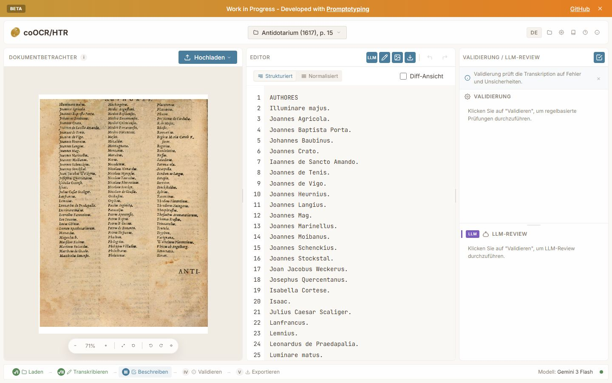

coOCR/HTR
Alte Drucke und Handschriften abzuschreiben kostet Zeit, und Fehler der automatischen Erkennung fallen erst im Vergleich mit dem Bild auf.
coOCR/HTR verbindet Texterkennung, Korrektur am Seitenbild, Prüfungen und Export in einer Browseranwendung. Über jede Lesung entscheidet die Fachperson.
Stand Forschungsvorschau. Eine Auswertung der Erkennungsqualität an Vergleichsdaten steht noch aus. Belege